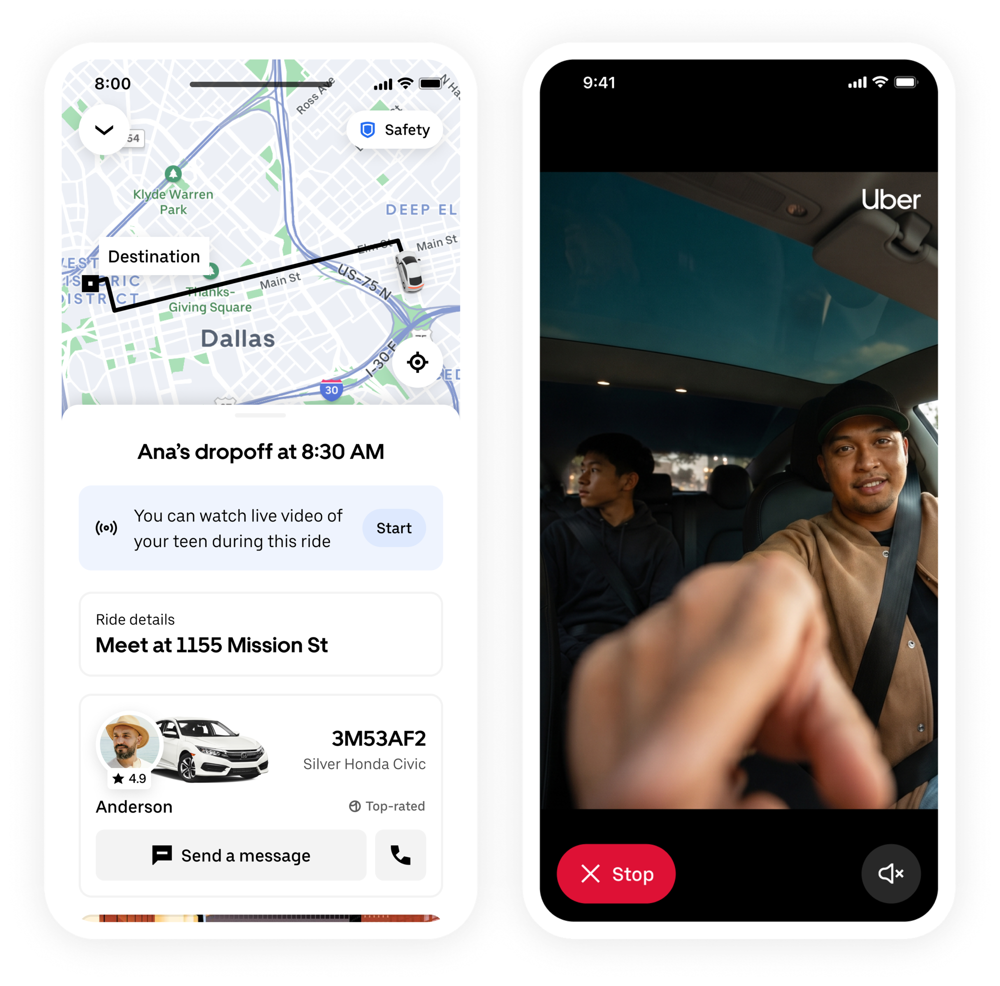
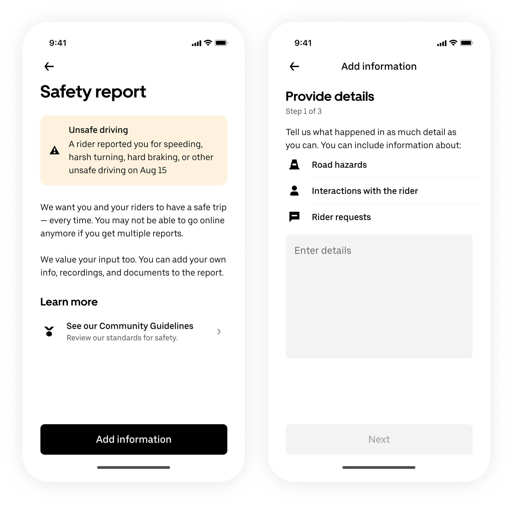

Record My Ride — Uber
I've led design for Record My Ride since 2022, taking it from an early pilot to a global product ecosystem reaching 3+ billion recorded trips.
We went from concept to a 0 → 1 launch in just four months to introduce an entirely new safety capability to Uber. I helped define the end-to-end experience for trip recording from setup and recording states to privacy, storage, and safety reporting.
I've continued leading the product as it's scaled across global markets, evolving the experience to support Uber's growing safety ecosystem.
- 3B+ trips recorded since launch
- 43 countries reached through global expansion
- First-of-its-kind in-app video dash cam for rideshare
Live video for Teens — Uber
Four years after taking Record My Ride from 0 → 1, we built on that foundation to launch live video for teen trips—a first-of-its-kind safety experience for rideshare.
I owned the end-to-end experience across three interconnected users—the teen, guardian, and earner—designing how each participant understands, interacts with, and responds to a live trip. The experience had to give guardians meaningful visibility while keeping teens and earners informed, with privacy and transparency at the core.
- First-of-its-kind in-app live streaming for rideshare

Record My Ride, Adoption, Growth, & Retention — Uber
Over four years, I worked across Record My Ride to drive adoption, strengthen retention, and create new opportunities for growth. This work spanned ~15 product initiatives across the earner journey—from helping more riders discover and adopt RMR to creating reasons to return and expanding the product's value over time.
Rather than treating these as isolated features, I worked across the ecosystem to identify opportunities, shape strategy, and evolve the product as user needs and business priorities changed.
- 31% adoption across all trips, up from 5.9% in 2024
Review Center & Report Hub — Uber
Designed a 0 → 1 earner-facing action ecosystem to provide a consolidated appeals channel for eligible deactivated earners, replacing a fragmented and inconsistent experience across Uber. Defined a cohesive journey across the full action lifecycle, working horizontally across Earner and Safety teams to bring previously disconnected experiences into one ecosystem.

Real-Time Document Check — Uber
I led design for Uber's identity verification experience for drivers. I designed the scanning experience to make this critical step fast and intuitive, using real-time feedback to guide users as they position their ID and automatically capturing the image once an optimal frame is detected. As the product design lead, I also prototyped and animated the experience, creating all motion assets in After Effects and illustrating the supporting visual elements.